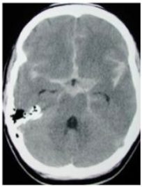
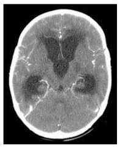
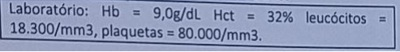
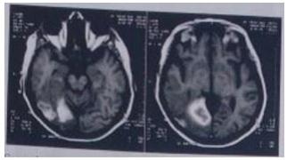
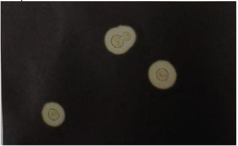
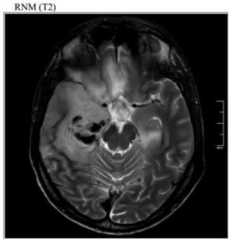

Assinale a assertiva incorreta levando-se em consideração um quadro de meningite em paciente pediátrico.
A quimioprofilaxia para doença meningocócica
Um paciente de 55 anos de idade, hipertenso e tabagista, foi levado por sua lha ao pronto-socorro. Ela estava preocupada com o que ouviu sobre o comportamento recente do pai. Contou que ele é contador e sempre foi muito reservado e educado com seus clientes. Entretanto, há dois dias, seus funcionários notaram que ele estava agitado, saindo muitas vezes de seu escritório, e, quando encontrava algum cliente, o xingava sem motivo. Os funcionários só perceberam mesmo que havia algo errado quando ele saiu do escritório sem roupas no corpo. No consultório, queixou-se de cefaleia holocraniana iniciada há cerca de três dias. Negou viagens ou vacinações recentes. O exame físico revelou temperatura axilar de 38°C, pressão arterial de 160 x 85 mmHg, frequência cardíaca de 92 bpm, frequência respiratória de 20 ipm, dextro 99 mg/dL, Glasgow 14 (AO 4, RV 4 e RM 6) e rigidez de nuca, sem outras alterações no exame neurológico. Fundo de olho sem alterações. Foi coletado o liquor, que evidenciou aspecto límpido, pressão de abertura de 8 cmHO, presença de 10 células/mm³, com predomínio linfocítico, glicose 66 mg/dL, sem alterações no gram, tinta da China negativa, teste de látex negativo, VDRL negativo. Tomogra a de crânio com contraste sem alterações. Considerando essa situação hipotética, assinale a alternativa que apresenta, respectivamente, o diagnóstico mais provável e o tratamento adequado.
Homem, 90 anos, previamente assintomático, morador de asilo, cartão vacinal regular, chega com cefaléia e febre há 72 horas, sonolento, com temperatura axilar de 38,5 ºC e rigidez de nuca. Não há história de sinusite de repetição ou qualquer outro foco infeccioso a distância. Teve três convulsões no local de origem. O médico realizou raquiocentese, que revelou líquor turvo, celularidade: 600/cm3, com predomínio de polimorfonucleares; proteína: 700 mg%; glicose: 16 mg/dl, presença de germes gram- positivos. Considerando os dados epidemiológicos, clínicos e laboratoriais do caso descrito, indique a afecção, o agente etiológico mais provável e o esquema antimicrobiano a iniciar, respectivamente:
Homem de 60 anos é admitido na emergência queixando-se de febre, cefaléia, vômitos e decaimento do estado geral. Ao exame, encontrava-se febril e com rigidez de nuca. Realizado punção liquórica, cujo Gram revelou Diplococos Gram- Negativo. Qual o agente etiológico mais provável?
Um paciente de 45 anos de idade foi atendido no pronto-socorro, com história de início abrupto de febre havia 48 horas, evoluindo com cefaleia holocraniana e vômitos. No exame físico, encontrava-se com nível de consciência rebaixado e apresentava rigidez de nuca. A TC de crânio era normal: A melhor conduta, nesse caso, é:
Homem, 27 anos, usuário de maconha e sem outros antecedentes mórbidos, foi levado pela mãe ao pronto atendimento, com história de alteração comportamental, agitação e agressividade. A mãe nega que o lho tenha feito uso de substâncias ilícitas no dia. Exame físico: paciente agitado, discurso desconexo, FC = 100 bpm, FR = 22 ipm, T = 39,7° C, PA = 100 x 60 mmHg e presença de múltiplas petéquias em membros inferiores. Assinale a alternativa que apresenta a conduta correta.
Mulher, 75 anos, com febre há 03 dias, cefaleia, rigidez nucal e vômitos, tem suspeita de Meningite e coleta de líquor na Urgência; a coloração de gram mostra presença de bacilos gram positivos. A cobertura antimicrobiana deverá contemplar a seguinte etiologia:
As principais complicações dos quadros de meningite incluem todas as abaixo, exceto
Qual alternativa apresenta a abordagem terapêutica mais adequada para o tratamento de uma criança com idade menor de 02 meses com meningite bacteriana?
Assinale a alternativa que apresenta as características que se espera encontrar no líquor do paciente com meningite tuberculosa.
Homem, 25 anos, com histórico de drogadição e abandono de tratamento do HIV, procura emergência por cefaleia holocraniana e de forte intensidade há mais de 1 semana e febre. Exames laboratoriais evidenciam anemia e linfopenia, e a TC de crânio com contraste não apresenta lesões. A principal hipótese diagnóstica e a conduta indicada para confirmar o diagnóstico são:
Pré-escolar de 3 anos foi levado à emergência com quadro de febre e cefaleia há 12 horas, apresentando rigidez de nuca ao exame físico e nível de consciência preservado. Realizou-se a punção lombar, com os seguintes resultados: 300 células com 70% de polimorfonucleares e 30% de mononucleares; glicorraquia de 20mg/dl e com glicemia de 80mg/dl; proteína: 150. As provas de látex para agentes bacterianos foram negativas e a pesquisa de Gram não foi realizada. Qual é o provável diagnóstico?
Idosa de 68 anos, hipertensa e tabagista, dá entrada na emergência com sonolência e febre alta. Segundo familiares, há três dias, a paciente vinha se queixando de cefaleia holocraniana e estado febril. No dia da admissão, a paciente estava sonolenta e evoluiu com episódio autolimitado de convulsões generalizadas. Ao exame, veri cou-se rebaixamento do nível de consciência, febre alta (39ºC), rigidez de nuca (apenas à exão) e sinais de Kernig e Brudzinski. A punção lombar deu saída a líquor (LCR) turvo com pressão aumentada, pleocitose intensa (> 1.000 leucócitos/mm³ , sendo 80% polimorfonucleares), elevada proteinorraquia (100mg/dL) e hipoglicorraquia (32mg/dL). Iniciou-se vancomicina, ceftriaxona, ampicilina e dexametasona. O provável patógeno bacteriano envolvido e o fator de risco que justi cam a associação de ampicilina ao esquema antibiótico, respectivamente, são:
Um paciente de 23 anos é admitido no pronto atendimento com queixa de cefaleia intensa com início súbito há 15 minutos, do tipo pressão, com piora a movimentação do corpo e associado a fotofobia. Ao exame físico o paciente apresenta-se agitado e com rigidez de nuca. Seus sinais vitais revelam uma temperatura de 37,2°, pressão arterial de 150x100mmHg, frequência cardíaca de 104bpm e frequência respiratória de 18ipm. O médico de plantão então solicita uma tomogra a de crânio. Qual o provável diagnóstico?

Homem, 55 anos, é levado à emergência por familiares, que relataram o início de febre (39ºC) havia dois dias, tendo evoluído com agressividade e sonolência. Fez uso de analgésicos sem melhora. Na admissão estava torporoso, Glasgow = 10.Ressonância magnética do crânio: áreas de aumento da intensidade do sinal em ambas as regiões frontotemporais, com aumento do sinal em T2. A hipótese diagnóstica mais provável para este paciente é:
Um militar de 22 anos de idade apresenta meningite por militares. Qual a conduta indicada em relação aos colegas de dormitórios?
As drogas abaixo são indicadas para a profilaxia dos contatos para doença invasiva meningocócita, exceto:
Qual a causa mais comum de meningite bacteriana adquirida na comunidade?
Assinale a alternativa incorreta em relação à indicação de quimioprofilaxia após a exposição ao meningococo.
Qual a alternativa apresenta a abordagem terapêutica mais adequada para o tratamento de uma criança com idade menor de 02 meses com meningite bacteriana?
Jovem de 20 anos, sexo masculino, procura atendimento devido à história de 5 dias de febre, fotofobia, dor no corpo e cefaleia holocraniana com piora progressiva. Nega diarreia ou sintomas respiratórios. Ao ser examinado, apresentava-se febril (39° C), taquicárdico (110 bpm) e com piora da cefaleia ao etir o pescoço. À análise, seu líquor mostrou-se incolor, límpido após centrifugação; proteína de 80 (referência: 15-45 mg/dl); glicose 8 (referência: 40-70 mg/dl); citometria 27 mil (referência: 0-5 células/mm3), sendo 80% de polimorfonucleares; bacterioscopia positiva com diplococos gram-negativos raros. A medicação a ser prescrita deve ser a(o):
Paciente, sexo masculino, 23 anos de idade. É sabidamente portador do vírus HIV, em tratamento irregular. Procurou atendimento no Pronto Socorro queixando febre baixa e mal-estar há uma semana, que evoluíram para cefaleia intensa, confusão mental e rigidez de nuca há 05 dias. Realizada TC na emergência com hidrocefalia discreta, sem lesões expansivas. A análise do líquor mostrou leucócitos de 400 m/l, com predomínio de linfócitos, proteína de 250 mg/dl e glicose de 38 mg/dl (glicemia sérica 90 mg/dl). Não houve micro-organismos corados ao gram. Cultura em andamento. Com relação ao caso acima, marque a assertiva correta.
Diante de um quadro de meningite sem complicação, qual é a duração mínima recomendada para o tratamento antibiótico?
Para contactantes domiciliares adultos de pacientes com meningite bacteriana aguda de etiologia meningocócica, há, em até 24 horas do diagnóstico do caso-índice, indicação para profilaxia com o uso da seguinte droga:
Pedro, lactente de 11 meses, com anemia falciforme, há 2 dias vem apresentando febre moderada acompanhada de inapetência e três episódios de vômitos. Há 6 horas o lactente foi atendido na emergência com piora do estado geral, toxemia e aparecimento de lesões purpúricas disseminadas. Realizado exame do líquor que mostrou pleocitose e presença de diplococos gram-negativo. Cultura do líquor evidenciou Neisseria meningitidis. Pedro frequentou a creche em período integral até ser encaminhado a emergência. Sabendo-se que a rifampicina está em falta nas farmácias do SUS, qual outra medicação pode ser utilizada na quimioprofilaxia dos lactentes comunicantes dessa creche?
Uma criança de 2 anos de idade apresenta história de febre alta, falta de apetite e irritabilidade há dois dias. A mãe informou que a vacinação está completa e que, pela manhã, surgiram petéquias no corpo do paciente. Ao exame físico, apresentava rigidez de nuca. A bacterioscopia do líquor mostrou a presença de meningococos. Considerando o período de transmissão da infecção e o fato de o paciente ter um irmão de 4 anos de idade, assinale a alternativa que corresponde melhor conduta para a proteção dos contactantes em casa.
Homem, 20 anos de idade, é levado ao pronto socorro com de dor de cabeça e febre alta há 2 dias, e acompanhante refere sonolência e confusão há 6 horas. Exame físico: sonolento, PA = 85x50 mmHg, FC = 110 bpm, Temperatura axilar = 39,6º, rigidez de nuca e petéquias difusas pelo corpo. Líquor = 750 (até 4 mm³) células com 85% de neutró los e 15% de linfócitos, proteína 300 mg/dL (até 40 mg/dL), lactato 82 ml/dL (8 a 19 mg/dL), glicose 12 mg/dL (glicose sérica 120mg/dL), e presença de diplococos gram negativos. Qual é o agente causal e o tratamento?
Acerca das patologias na infância, julgue o item a seguir. A síndrome de Waterhouse-Friderichsen na criança caracteriza-se por septicemia meningocócica, sem meningite, que se manifesta por sinais clínicos de choque e coagulação intravascular disseminada.
Mulher de 47 anos de idade, com antecedente de Hipertensão Arterial Sistêmica, procura o pronto atendimento referindo cefaleia holocraniana de moderada intensidade, contínua, opressiva, que piora com a mudança de decúbito, iniciada há 5 semanas. Relata turvação visual bilateral de início recente, além de piora na intensidade da cefaléia, náuseas matinais e sudorese profusa vespertina. Medicações em uso contínuo: Enalapril 20mg 12/12 horas, Hidroclorotiazida 25mg/dia, Atenolol 50mg 12/12 horas, Anlodipino 5mg/dia. Na admissão hospitalar apresenta os sinais vitais: FC=87bpm, FR=18irpm, PA=152x93mmHg, T=37,9oC. No exame neurológico apresenta-se consciente, orientada no tempo e espaço, notado estrabismo divergente com PIFR e fotofobia, tremor no de extremidades, sem alterações na marcha ou da força muscular, reflexos osteotendinosos profundos presentes e exaltados, e presença de sinais de irritação meníngea. A tomogra a de crânio sem contraste não evidenciou alterações. No exame de líquido cefalorraquidiano apresentou pressão de abertura 32 cmH20, a amostra coletada possui aspecto xantocrômico, cuja análise laboratorial revelou celularidade de 384 células/mm3 com predomínio de células mononucleares, glicose 34 mg/dL e proteína 88 mg/dL. Exame bacterioscópico e cultura em andamento. Segundo o texto acima, assinale a alterativa que melhor corresponde ao caso:
Levando-se em consideração a epidemiologia das meningites no Brasil, assinale a alternativa correta em relação ao fármaco de escolha para a realização de terapia empírica no caso de suspeita para a meningite.
Paciente de 11 anos chega ao PA com febre, vômitos e cefaleia e rigidez de nuca. Após suspeitar de meningite, você colhe o líquor que vem com o seguinte resultado: Líquor; Cor: límpido; Celularidade: 125 células; Diferencial: Linfócitos 25% Neutró los: 75%; Glicose: 90 mg/dl; Proteínas: 67; Glicemia plasmática 180mg/ld. A recomendada segundo o Tratado de Pediatria é
Menina de 6 anos encontra-se internada para tratamento de meningite bacteriana com ceftriaxone há cinco dias. Hoje, voltou a apresentar cefaleia holocraniana e vômitos, realizando tomografia de crânio. A conduta é

Homem de 55 anos, previamente hígido, procura assistência médica devido à cefaleia de iníco insidioso há 2 dias. Ao exame físico: PA 170 x 110 mmHg, sonolento, glicemia capilar normal, fundo de olho normal, rigidez de nuca e sem dé cit neurológico localizatório.O líquor foi colhido após TC crânio sem alterações. Resultado do líquor: 330 células, 88% de neutró los, sem plasmócitos, glicose baixa, lactato elevado, ADA normal, proteínas 200 mg/dL. É correto a rmar que se trata mais provavelmente de um quadro de
Sobre as encefalites assinale a alternativa CORRETA:
Em relação à recomendação de antibioticoterapia para casos de doença meningocócica em crianças e adultos, o uso de antibiótico deve ser associado a outros tipos de tratamento de suporte, como reposição de líquidos e cuidadosa assistência. Sendo CORRETO que:
O risco de desenvolver doença meningocócica invasiva, entre contatos domiciliares de um doente, é cerca de 500 a 800 vezes maior que na população geral. Ocorre primariamente em pessoas suscetíveis, recentemente colonizadas por uma cepa patogênica. Inúmeros fatores de risco têm sido associados, dentre eles podemos aceitar como CORRETO que:
As condições a seguir estão associadas a baixos níveis de glicose no líquor, exceto uma. Assinale-a:
A colonização assintomática da nasofaringe pela N. meningitidis caracteriza o estado de portador que ocorre frequentemente, chegando a ser maior que 10% em determinadas faixas etárias nos períodos endêmicos, podendo o indivíduo albergar o meningococo por período prolongado. Sendo a nasofaringe, o local de colonização do microrganismo no homem, não podemos aceitar que:
A quimioprofilaxia com rifampicina é indicada para os contatos íntimos de pacientes com diagnóstico de meningite por:
Paciente com 56 anos de idade, masculino, alcoólatra, se apresenta com histórico de três semanas com confusão e estupor. Ao exame encontra-se afebril, com paralisia direita do sexto par craniano e tremor de extremidades. Líquor com 250 leucócitos/mm³ (68% de linfócitos), 300 eritrócitos/mm³, proteínas aumentadas e glicose baixa. PPD forte reator e culturas negativas após 48h. Prova terapêutica em andamento. Para confirmar diagnóstico o certo é:
Paciente de 18 anos, masculino, possui história de febre, cefaleia, confusão mental e letargia há uma semana. O exame físico é normal e não há evidências de lesões neurológicas focais. A tomogra a de crâneo não mostra alterações. Líquor com 250 leucócitos por mm3, 78% de linfócitos e 500 eritrócitos por mm3 no primeiro tubo e 630/mm3 no segundo tubo. Gram não evidenciou microrganismos. O próximo passo a ser dado é:
Idoso de 72 anos, com história de estado gripal há duas semanas, evoluiu com cefaleia, entupimento nasal e secreção nasal purulenta. Após alguns dias, houve piora do quadro com febre alta seguida por calafrios e confusão mental. O exame físico não mostra sinais de irritação meníngea, mas se veri cou monoparesia de membro superior esquerdo. A conduta a seguir que mais ajudará a definir o diagnóstico, nesse caso, será realizar:
A meningite que mais comumente esta associada à perda visual é:
Paciente do sexo masculino, 80 anos, deu entrada no setor de emergência com estado confusional agudo. Ao exame físico, o médico plantonista detectou rigidez de nuca. Tendo meningite como principal hipótese diagnóstica, foram realizadas tomogra a de crânio e punção liquórica. Qual dos agentes abaixo é mais comumente encontrado em casos assim?
Escolar, 7 anos, foi internado com quadro de meningite meningocócica. Quais pessoas devem receber quimioprofilaxia?
Paciente previamente hígido de 48 anos, do sexo masculino, é admitido no CTI com quadro de febre de até 38,5°C há 6 dias associada a mialgia e prostração, evoluindo nas últimas 24 horas com cefaleia, náuseas, vômitos e um episódio isolado de perda da consciência não presenciado com duração de aproximadamente 10 minutos. Durante a avaliação inicial, o paciente encontra-se choroso e retira, sem ser solicitado, suas roupas. Sinal de Bikele ausente. Exames laboratoriais: Sódio: 136 mEq/L (N: 135-145), Potássio: 4,3 mEq/L (N: 3,5-5,5), Cloro: 100 mEq/L (N: 98-107), Cálcio: 8,9 mg/dl (N: 8,5-10,1), Glicemia: 80 mg/dl (N: 70-99), Hemoglobina: 15,3 g/dl (N: 12- 16), Leucócitos: 7000 (0/2/0/0/2/75/15/8) (N: 4000-11000), Plaquetas: 267.000 (N: 150.000-450.000), Ureia: 23 mg/dl (N: 13-43), Creatinina: 1,0 mg/dl (0,6-1,1). Dentre as opções abaixo, qual o próximo exame a ser solicitado na avaliação diagnóstica do caso em questão e o achado esperado, CONSIDERANDO A PRINCIPAL HIPÓTESE DIAGNÓSTICA?
Uma jovem de 22 anos é levada por familiares ao serviço de emergência apresentando quadro de cefaleia de forte intensidade, febre e desorientação. Ao exame físico evidencia-se rigidez nucal e edema de papila óptica, sem sinais focais. Leucograma com 15.000 leucócitos/mm³ e 12% de bastões. Não há disponibilidade de Tomogra a Computadorizada do Crânio. Assinale a alternativa que contém a conduta mais adequada para esse caso.
As meningites bacterianas acometem indivíduos de todas as faixas etárias, porém cerca de 30% dos casos ocorrem em crianças menores de 5 anos de idade. Diagnóstico e tratamento devem ser precoces a m de evitar desfechos desfavoráveis. Assinale a alternativa CORRETA a respeito dessa doença.
Uma mulher de 64 anos apresenta, há 1 dia, cefaleia, rigidez de nuca e febre. Uma punção lombar é realizada, com os seguintes resultados no liquor: leucócitos = 7.000, com 90% de neutró los, proteína = 150mg/dL e glicose = 23mg/dL. O Gram revela diplococos Gram positivos. Qual é a antibiótico de escolha neste momento?
Paciente jovem, sexo masculino, 28 anos, apresentando há três dias cefaleia holocraniana, astenia, mal-estar, febre e hiporexia. Há um dia, evoluiu com vômitos e prostração. Nega outras queixas. Ao exame físico, PA: 100x50 mmHg, FC: 120 bpm, FR: 28 IRM, T: 38,5°C. Regular estado geral, acianótico, anictérico, taquidispneia leve, sonolento, desidratado 1+/4+, hipocorado 1+/4+. RCR, 2T, BNF, sem sopro. Mv levemente diminuído, sem RA. Abdome plano, RHA+, timpanismo, indolor e sem visceromegalias. Assinale a alternativa que apresenta a principal hipótese diagnóstica e a conduta adequada.
A Etiologia mais provável para meningite em crianças de 0 a 2 meses é:
Sobre as Meningites Agudas Bacterianas, selecione a opção correta no que se refere a recomendação adequada à realização de precaução e isolamento de pacientes.
As meningites bacterianas são caracterizadas por um processo inflamatório das meninges, membranas que envolvem o cérebro e a medula espinhal, causadas por uma grande variedade de bactérias. O tratamento precoce e adequado dos casos reduz significativamente a letalidade da doença, sendo importante para o prognóstico satisfatório. Quanto às meningites bacterianas, deve-se considerar o seguinte:
A etiologia da meningite bacteriana aguda dependerá da idade, do estado imunológico e da epidemiologia. Os principais agentes na faixa etária >3 meses são:
Assinale a alternativa que apresenta a conduta CORRETA frente a um paciente com quadro sugestivo de encefalite herpética.
Assinale a alternativa INCORRETA sobre as infecções pelo vírus herpes.
Qual é o método diagnóstico indicado para a confirmação de encefalite pelo vírus herpes simples?
Nas meningites bacterianas agudas, o tratamento baseia-se no diagnostico precoce, exame do LCR e uso correto de antibióticos, assim sendo, é considerado padrão-ouro para o tratamento desta infecção?
A infecção invasiva pela N. meningitidis pode apresentar um amplo espectro clínico, que varia desde febre transitória e bacteremia oculta até formas fulminantes, com a morte do paciente em poucas horas após o início dos sintomas. Sobre isso, NÃO podemos concordar com o item:
Um paciente de 70 anos de idade com neoplasia de cólon em tratamento oncológico quimioterápico apresenta febre, cefaleia de forte intensidade holocraniana e alteração do nível mental com evolução há três dias. Apresenta, ao exame físico, sinais de irritação meníngea. A tomogra a de crânio está normal. É realizada punção lombar que identi ca sinais de meningite bacteriana com presença de bacilos Gram-positivos. Com relação a esse caso clínico, é correto a rmar que o germe e a terapêutica antimicrobiana apropriada são, respectivamente:
Revisar: possível letra faltando em enunciado
Como se apresenta a análise do líquido cefalorraquidiano compatível com neurotuberculose?
Uma mulher de 84 anos com diabetes mellitus e doença renal crônica é admitida no hospital por 2 a 4 dias com alterações do estado mental e dores de cabeça. Ela nega a fotofobia, mas tem rigidez leve de nuca. A TC de crânio revela um abscesso focal de 1 cm no lobo temporal direito e a análise do líquido cefalorraquidiano (LCR) mostra uma contagem leucocitária de 800 / Gram do LCR revela bacilos gram-positivos. Qual dos seguintes antibióticos é a escolha mais apropriada para este paciente?
Qual resultado de LCR é mais sugestivo de meningite pneumocócica?
R.S.A., 26 anos, sexo masculino, solteiro, estudante de direito, natural e procedente de Cuiabá (MT). Previamente hígido, sem quaisquer comorbidades, bem como ausência de antecedente familiar de doença mental. História de cefaleia há 7 dias, de forte intensidade e primeira crise convulsiva do tipo generalizada tônico clônica há 5 dias, evoluindo com quadro de confusão e distúrbio comportamental utuante. Ontem apresentou nova crise convulsiva, 3 crises nas últimas 12 horas. Deu entrada no HUJM com agitação psicomotora e desorganização do comportamento. Resultado de hemograma com linfocitose e TC de Crânio normal, RNM de crânio com contraste: Hipersinal em lobo temporal e córtex da ínsula à esquerda. De acordo com o caso clínico, marque V para as afirmativas verdadeiras e F para as falsas. ( ) Hipótese diagnóstica principal é epilepsia por esclerose mesial de lobo temporal, EEG deve ser solicitado assim como iniciar uso de fenobarbital regular e encaminhar paciente para o neurologista. ( ) A aplicação de PCR para detecção de DNA viral no LCR forneceu o padrão ouro para o diagnóstico de encefalite por herpes simplex, sendo a primeira hipótese diagnóstica. ( ) Dengue é a arbovirose mais prevalente nas Américas, endêmica em quase todos os países tropicais/subtropicais e deve fazer parte da suspeita clínica a arbovirose neuroinvasiva. ( ) Conduta sequencial é submeter paciente à coleta de LCR, RNM de crânio com espectroscopia para definição do diagnóstico de abcesso cerebral e iniciar antibioticoterapia de amplo espectro. Assinale a sequência correta.
Paciente de 4 anos previamente hígido, é levado ao PS com quadro de febre alta (39°C) e irritabilidade há 1 dia. Ao exame físico apresenta-se em regular estado geral, prostrado e febril (38,8°C). Percebe-se rigidez nucal. Coração com bulhas rítmicas taquicárdicas (FC = 145) sem sopros. Pulmões livres e abdome distendido com fígado a 2,5 cm do rebordo costal direito. Foi obtido liquor por punção lombar que revelou: 150 leucócitos/mm3; 90% de polimorfonucleares e 10% de linfomonócitos; Glicorraquia = 10 mg/dl e proteínoraquia = 120 mg%; Bacterioscopia com cocos gram negativos. É opção para a adequada profilaxia dos contactantes deste paciente:
Paciente de 8 anos foi trazido ao hospital por febre, cefaleia e vômitos há 48 horas. Ao exame físico, por ocasião da admissão, foram constatadas agitação motora e alteração do nível de consciência. Durante a observação clínica, apresentou crise convulsiva tônico- clônica generalizada, perda de memória e alucinações. A ressonância magnética mostrou hiperdensidade nos lobos frontal e temporal esquerdo. O diagnóstico mais provável é:
Para contactantes domiciliares adultos de pacientes com Meningite Bacteriana Aguda de etiologia meningocócica, há, em até 24 horas do diagnóstico do caso índice, indicação para profilaxia com o uso da seguinte droga:
Mãe de menino de 1 ano, internado devido a diagnóstico de meningite bacteriana, isolada bactéria questiona médico da enfermaria quanto ao tratamento para os colegas da creche. O médico deve orientar como profilaxia para os colegas da creche:
Paciente sexo feminino, 20 anos idade, com febre há 1 dia é encontrada no seu quarto desacordada e levada imediatamente para a emergência do HB (Hospital de Base). Você está de plantão no P.S. e constata que a mesma está febril (38,5 º C), confusa, desorientada, com pupilas isocóricas e fotoreagentes, sem sinais meníngeos e com hemiparesia desproporcional á direita. Foi realizado tomogra a de crânio com suspeita de lesão no lobo temporal esquerdo, sem desvio da linha média. Você realizou punção liquórica que revelou: 125 células (predomínio linfocitária: 82%); 55 mg de proteína, 88 mg de glicose e bacterioscopia negativa. Frente a esses achados, qual deveria ser a sua conduta:
Paciente, 25 anos, sexo feminino, sem comorbidades conhecidas iniciou há 24h febre e cefaleia. Evoluiu com crise convulsiva sendo levada para UPA. Ao exame: Torporosa, hipocorada 2+/4+, anictérica. PA: 90 x 60 mmHg, FC 135 bpm/min, FR 28 irp/min, Tax 38,5° C, RCR com sopro sistólico pancardíaco 2+/6+, MVUA sem RA. Sem lesões cutâneas. Rigidez de nuca terminal. A principal hipótese diagnóstica e conduta inicial é:
Homem, com quadro agudo de febre alta, mialgia, astenia, cefaléia e odinofagia por faringite não exsudativa. Após seis horas do início dos sintomas evoluiu com sonolência, confusão mental, vômitos, hipotensão arterial, taquicardia, taquipnéia e oligúria. Ao exame da pele: palidez, extremidades frias, acrocianose, tempo de enchimento capilar aumentado, petéquias e equimoses, predominantes em dorso e regiões posteriores dos membros e presença de hemorragia exteriorizada pelas narinas e boca. O diagnóstico mais provável assinale a correta:
Homem, com quadro agudo de febre alta, mialgia, astenia, cefaléia e odinofagia por faringite não exsudativa. Após seis horas do início dos sintomas evoluiu com sonolência, confusão mental, vômitos, hipotensão arterial, taquicardia, taquipnéia e oligúria. Ao exame da pele: palidez, extremidades frias, acrocianose, tempo de enchimento capilar aumentado, petéquias e equimoses, predominantes em dorso e regiões posteriores dos membros e presença de hemorragia exteriorizada pelas narinas e boca. Sobre o diagnóstico e tratamento específico do caso, assinale a alternativa INCORRETA:
Recém-nascido, com 12 dias de vida apresenta o seguinte resultado liquórico: glicose 20 mg/dL; proteínas 90 mg/dL; 1000 leucócitos/mm³, com predomínio de neutrófilos. Considere os fármacos abaixo para prescrever o tratamento ao paciente. (1) Ampicilina; (2) Gentamicina; (3) Vancomicina; (4) Metronidazol; (5) Ceftriaxone. O tratamento indicado para o recém-nascido é apenas
Homem, 35 anos, procedente de garimpo do Mato Grosso, é admitido com quadro de cefaléia, confusão mental, tendo apresentado uma crise epiléptica tônico-clônica generalizada há 2 horas. Referia emagrecimento e febre baixa não medida há um mês. Ao exame físico: emagrecido, descorado 1+/4+, micropoliadenia generalizada, hepatoesplenomegalia, sem sinais de localização neurológica. Tomogra a computadorizada cerebral: lesões nodulares hipodensas, de 1,5-2 cm, com efeito de massa e impregnação "em anel" pelo contraste iodado, rodeadas por halo de edema, simétricas, nos núcleos da base e tálamos. Qual o diagnóstico mais provável:
As meningites bacterianas mais comuns são causadas pelas bactérias meningococos, pneumococos e Haemophilus. Das três, a meningocócica é a mais facilmente transmissível pela via respiratória e também a mais terrível por ter a evolução do quadro clínico mais rápido. Sobre as meningites bacterianas é INCORRETO afirmar:
O excesso de pombos em determinadas cidades brasileiras pode determinar aumento na incidência de:
Igor, 4 anos, é levado à unidade de saúde da família com história de febre, cefaleia e vômitos que iniciaram há 4 dias. Ele estuda em período integral na creche próxima à sua casa, e mora com seus pais e três irmãos. Na unidade de saúde, foi atendido inicialmente pela enfermeira, que encaminhou para avaliação do médico da família. Ao exame, este observou exantema petequial e sinal de Brudzinski positivo. Diante deste quadro o paciente foi encaminhado para internação hospitalar. Assinale a alternativa que apresenta a orientação correta quanto à prevenção e profilaxia neste caso:
No tratamento empírico da meningite bacteriana, além de cefalosporina de terceira geração, devemos associar o seguinte antibiótico devido à resistência do
Qual das alternativas abaixo está correta em relação à quimioprofilaxia da meningite bacteriana?
Criptococose humana é causada por duas espécies de leveduras do gênero Cryptococcus – Cryptococcus neoformans e Cryptococcus gattii –, havendo diferenças e semelhanças entre a criptococose causada por C. neoformans e por C. gattii. Em relação aos aspectos da epidemiologia, da clínica, do diagnóstico e do tratamento das duas formas de criptococose, considere as seguintes afirmativas: 1. A principal fonte de infecção ambiental de C. neoformans são as excretas de morcego, enquanto as de pombos (Columbalivia) são associadas a C. gattii.; 2. A criptococose por C. neoformans é geralmente uma doença oportunista, estando principalmente associada a pacientes com AIDS, enquanto a criptococose por C. gattii é prevalente em indivíduos imunocompetentes.; 3. A criptococose por C. gattii frequentemente acomete simultaneamente os pulmões e o sistema nervoso central, enquanto, na maioria das vezes, a infecção por C. neoformans causa exclusivamente meningite ou meningoencefalite.; 4. O diagnóstico laboratorial de ambas as modalidades de criptococose é feito pelo método tinta da China, ou nigrosina, associado à cultura e a testes imunológicos, principalmente o teste do látex, ou teste rápido (Lateral Flow Assay).; 5. A terapêutica da meningite criptocócica depende do agente etiológico. Quando a infecção é por C. gattii, o tratamento pode ser feito apenas com uconazol, porque, em geral, os pacientes são imunocompetentes. Já a criptococose neoformans deve sempre ser tratada com anfotericina B, porque os pacientes geralmente são imunossuprimidos. Assinale a alternativa correta.
Em relação à transmissibilidade da meningite tuberculosa, é correto afirmar que:
Menina de dois anos iniciou febre alta, cefaleia e vômitos há 2 dias. Procurou hoje a Unidade de Pronto Atendimento (UPA) e realizou punção lombar devido à suspeita de meningite bacteriana. O exame do líquor revelou 500 células (80% polimorfonucleares/20% mononucleares), proteína= 400, glicose= 10mg/dl e Bacterioscopia com diplococcus gram negativo. Baseado no caso descrito acima marque a assertiva correta quanto à etiologia e indicação de pro laxia secundária para os contactantes:
Criança de 11 anos, masculino, previamente saudável, deu entrada em serviço médico de urgência com história de febre, cefaleia e vômitos de início há aproximadamente 24 horas. Mãe relata que a criança se encontra mais sonolenta nas últimas duas horas. Ao exame: EG grave, Glasgow 10, apresenta rigidez de nuca e sinal de Brudzinski presente. Ausculta cardiopulmonar normal, abdome ácido, sem visceromegalias. Presença de lesões purpúricas em membros inferiores. Temperatura axilar = 38,9°C; pressão arterial = 90 x 60 mmHg; FC = 104 bpm; FR = 24 irpm. Estudo do líquido cefalorraquidiano: liquor turvo, 565 células, com predomínio de polimorfonucleares. 89 mg/dl de proteínas e 26 mg/dl de glicose. Hemograma: leucócitos de 16000/mm³, com 11% de bastões. Plaquetas: 120.000/mm³. O agente infeccioso que mais provavelmente é o causador do caso clínico descrito é:
Recomenda-se quimiopro laxia para todos os contatos íntimos de pacientes com meningite meningocócica, independentemente da idade ou do status de imunização. São considerados como contactantes íntimos os que moram na mesma casa, que frequentam a mesma creche ou escola, mesmo em meio período, e devem receber rifampicina por dois dias. PORQUE O objetivo é tratar o contactante portador do meningoco.
Analise o líquido cefalorraquidiano de um paciente imunodeprimido de 4 anos de idade: aspecto: turvo; leucócitos = 1.200 células; diferencial de celularidade = 93% polimorfonucleares, 7% mononucleares; proteína = 200 mg/dl; glicose = 20 mg/dl; coloração de Gram: não foram vistos germes; coloração de BAAR: não foram vistos germes. Esses dados são sugestivos de infecção do sistema nervoso central, classificada como:
A doença meningocócica, apesar de sua baixa prevalência atual no Brasil, tem elevado potencial de morbidade e mortalidade e, portanto, seu tratamento deve ser instituído precocemente. A respeito dessa doença, assinale a alternativa CORRETA.
Lactente, 2 meses, foi encaminhado ao serviço de emergência com exame clínico e exames complementares que confirmaram o diagnóstico de meningite. O liquor apresentou-se purulento, com aumento de leucócitos acima de 1.000/mm³, proteinorraquia (acima de 80 mg/dl) e bacterioscopia negativa. Considerando os patógenos mais frequentes para a faixa etária, indica-se como tratamento empírico inicial:
Na profilaxia dos contactuantes íntimos da meningite meningocócica utiliza-se rifampicina à:
A Meningite deve ser tratada de maneira diferente em cada faixa etária e em cada clínica apresentada pelo paciente, pois existem agentes etiológicos mais frequentes e distintos para cada situação. Quanto ao tratamento da meningite, é correto afirmar que em
Em relação ao líquor na Meningite, é correto afirmar que a
Segundo o ISDA, deve-se colher o líquor, na suspeita de meningite, antes de realizar exame de imagem:
Em relação ao tratamento de complicações clínicas associadas ao quadro de epilepsia, julgue o seguinte item. O fármaco mebendazol é a principal opção terapêutica no tratamento da neurocisticercose associada a quadro de epilepsia.
Menino de 18 meses, natural e procedente de São Paulo (capital) foi levado ao pronto-socorro com história de febre de 39°C há 6 horas, recusa alimentar, irritabilidade, vômitos e sonolência. Mora com os pais e irmã de 3 anos. Fica em creche 8 horas por dia. O exame físico mostra erupção petequial em tronco, membros e conjuntivas. Considerando o diagnóstico mais provável, qual é a conduta profilática para os contatos dessa criança?
Em relação à Encefalite, assinale a alternativa INCORRETA:
Menino de 3 anos é trazido ao pronto atendimento por febre ao longo da última semana. Nos cinco dias precedentes, houve depressão progressiva da consciência, vômitos e cefaleia. Ao exame físico, apresentava sinais meníngeos, estupor, alterações da motricidade extraocular e hemiparesia direita. Tomogra a computadorizada sem contraste mostrou aumento de todo o sistema ventricular. Foi submetido à punção lombar com raquimanometria. A pressão intracraniana estava aumentada. O LCR estava turvo e foram encontrados 400 leuc./mm³, sendo 80% mononucleares e 20% polimorfonucleares, glicorraquia de 5 mg/dl e proteinorraquia de 300 mg/dl. Qual a principal hipótese diagnóstica?
A droga preferencial na profilaxia de indivíduo exposto à doença meningocócica é:
Qual é o tempo de tratamento de uma encefalopatia herpética?
Em um caso de meningite bacteriana aguda por Streptococcus pneumoniae (com concentração inibitória mínima de betalactâmicos muito elevada), o esquema terapêutico de escolha, dentre os abaixo, é
Na análise do líquido cefalorraquidiano em um paciente com suspeita de meningoencefalite tuberculosa, qual dos achados abaixo fala CONTRA esse diagnóstico?
Assinale a alternativa CORRETA em relação à bactéria criança:
Lactente de nove meses está internado com meningite bacteriana. Exame do liquor na admissão: celularidade: 1329 células/mm³ (40% polimorfonucleares e 60% mononucleares); glicose: 11 mg/dl; proteínas: 189 mg/dl; teste de aglutinação em látex e cultura: N. meningitidis B. Iniciou-se penicilina cristalina, com desaparecimento da febre em 12 horas. Evolução clínica sem intercorrências até reinício de febre no quinto dia de tratamento (entre 38,2ºC e 39,1ºC), em quatro picos diários, sem outras manifestações clínicas. Neste momento, foram realizados: tomogra a: normal; exame do liquor: 4 células/mm³; glicose: 60 mg/dl; proteínas: 30 mg/dl; látex e cultura: negativos. A conduta adequada é:
Escolar de 5 anos é admitido na emergência com queixa de febre há 3 dias, cefaléia intensa, náusea e vômito. Ao examinar verifica-se ridigez de nuca, prostração e sinais de irritação meníngea (Kernig, Brudzinski), evoluindo para insu ciência respiratória e necessitando de intubação orotraqueal. No resultado do exame do líquor verifica-se aspecto turvo, cor branca leitosa, cloretos diminuídos, glicose diminuída e proteína total aumentada. Com base nas informações podemos afirmar que: I. Trata-se de meningite bacteriana.; II. Todos os pro ssionais envolvidos diretamente, ou indiretamente, assim como todos os contatos íntimos devem fazer quimioprofilaxi, sendo a droga de escolha a ceftriaxone.; III. Trata-se de meningite viral.; IV. O isolamento do paciente está indicado apenas durante as primeiras 24 horas do tratamento com o antibiótico adequado.; V. É caso de noti cação compulsória, sendo importante a vigilância de todos os contatos íntimos por um período mínimo de 10 dias pela equipe de epidemiologia. Esta equipe deverá orientar a população sobre os sinais e sintomas da doença, bem como indicar os serviços de saúde que devem ser acessados frente a uma suspeita diagnóstica de meningite. Verifica-se que são verdadeiras:
A vigilância epidemiológica de um determinado município, ao ser noti cado por um hospital, da internação de uma criança de um ano de idade com diagnóstico de meningite por haemophilus in uenzae, imediatamente realizou visita domiciliar e constatou que, além da criança, moravam ali 2 irmãos sendo um de 4 e outro de 10 anos; pai de 40 e mãe de 34, além dos avos de 70 anos. O irmão mais velho está na escola primária. A profilaxia com rifampicina deve ser realizada:
Revisar: possível letra faltando em enunciado
Paciente com 8 anos de idade chega a emergência pediátrica devido a febre por 24 horas com vômitos e cefaléia persistente. Ao exame físico apresenta sinal de Brudzinski positivo, realizando punção lombar com líquor corroborando para meningite bacteriana. Ao exame microbiológico, observou-se diplococos gram negativos, levantando-se hipótese de Neisseria meningitidis anafilaxia ao uso de beta-lactâmicos. Neste caso, qual o antibiótico adequado para o tratamento?
Menina de 7 anos é atendida com febre, vômitos e cefaleia intensa. Como história pregressa tem rinite crônica e queixas frequentes de cefaleia. Ao exame encontra-se sonolenta com rigidez de nuca. Exame de liquor: 1.290 células, das quais 92% são polimorfonucleares, proteína 94 mg%, glicose 18 mg%. O diagnóstico mais provável é:
O abscesso cerebral é uma infecção intracraniana que pode ocorrer após otite média, mastoidite, sinusite e infecção dentária, além de poder estar associada ao traumatismo craniano penetrante e procedimentos neurocirúrgicos. A respeito de seu tratamento, é correto afirmar:
Homem, 35 anos, no último ano em investigação de crises convulsivas de repetição. A ressonância magnética (RM) do crânio tem inúmeras lesões císticas, de paredes espessadas, algumas com imagem sugestiva de escólex no interior. O tratamento de escolha deve ser:
Abscessos cerebrais mais frequentemente se desenvolvem por:
Na meningite bacteriana encontramos alterações no líquido cefalorraquidiano na punção lombar como:
Em um recém-nascido de dez dias de vida, apresentando quadro compatível com meningite aguda, qual dos sinais abaixo é MENOS provável de ser encontrado?
Paciente de 8 anos, com história de febre de início súbito há 6 horas de 39,5°C e vômitos, procura pronto-atendimento. Na entrada, apresenta-se febril (39°C), FC = 120 bpm, FR = 30 ipm, raras petéquias em membros inferiores e abdômen, Glasgow 15, ativo, acordado. Sua hipótese diagnóstica e conduta são:
Paciente masculino, 33 anos, admitido com quadro de cefaleia, vômitos, febre e rigidez de nuca. Ao exame físico: consciente, orientado e com sinais de Lasègue e Brudzinski presentes. Realizado punção liquórica: Turvo, Glicose = 13 mg/dl, proteína 450 mg/dl, predomínio de polimorfonuclear, bacilos Gram positivos. Assinale a alternativa CORRETA:
São alterações encontradas no Líquido Cefalorraquidiano (LCR) para meningites bacterianas:
A doença meningocócica é uma infecção bacteriana aguda. Quando se apresenta na forma de doença invasiva, caracteriza- se por uma ou mais síndromes clínicas, sendo a meningite meningocócica a mais frequente delas e a meningococcemia a forma mais grave. Levando-se em consideração os principais exames a serem solicitados para o esclarecimento diagnóstico de casos suspeitos, analise os itens abaixo: I. Reação em Cadeia da Polimerase (PCR). II. Aglutinação pelo Látex. III. Cultura. IV. Doppler transcraniano. Estão CORRETOS os itens.
Gestante, com 12 semanas de gestação, procura atendimento para orientações pois a mesma tem contato estreito (intradomiciliar) com portador de meningite por meningococo. Recomenda-se como medida profilática a administração de:
Paciente de 20 anos, portador de esferocitose, esplenectomizado, apresentou quadro súbito de febre alta, cefaleia, vômitos e alteração da consciência. Análise do LCR mostrou liquor purulento. A etiologia mais provável em caso de meningite é:
Mulher de 25 anos com antecedente hígido, há dois dias apresenta febre aferida de 39-40°C, com calafrios e mialgia difusa. Nas últimas 24 horas, houve significativa queda de estado geral. Ao exame, observam-se petéquias subconjuntivais e algumas esparsas nos membros inferiores e na cintura. Não há rigidez de nuca. Considere também os seguintes dados: (CONFORME IMAGEM NO CADERNO DE QUESTÕES). A hipótese diagnóstica é de

Com relação à transmissibilidade e à suscetibilidade da doença meningocócica na infância, assinale a alternativa INCORRETA.
Em relação às meningites, assinale a alternativa que se relaciona aos tipos de meningite em que se torna necessário a quimioprofilaxia dos contactantes.
Escolar de 7 anos é levado ao pronto atendimento com queixa de 24 horas de febre, vômitos e cefaleia holocraniana. Ao exame físico, foram constatadas sonolência e rigidez de nuca. O liquor apresentou 500 leucócitos com predomínio de polimorfonucleares (90%), glicose de 25 mg/dl e proteínas de 180 mg/dl. Qual o provável agente etiológico, com seu respectivo tratamento?
Homem, com quadro agudo de febre alta, mialgia, astenia, cefaleia e odinofagia por faringite não exsudativa. Após seis horas do início dos sintomas evoluiu com sonolência, confusão mental, vômitos, hipotensão arterial, taquicardia, taquipneia e oligúria. Ao exame da pele: palidez, extremidades frias, acrocianose, tempo de enchimento capilar aumentado, petéquias e equimoses, predominantes em dorso e regiões posteriores dos membros e presença de hemorragia exteriorizada pelas narinas e boca. Sobre o diagnóstico e tratamento específico do caso, assinale a alternativa incorreta:
Homem, com quadro agudo de febre alta, mialgia, astenia, cefaleia e odinofagia por faringite não exsudativa. Após seis horas do início dos sintomas evoluiu com sonolência, confusão mental, vômitos, hipotensão arterial, taquicardia, taquipneia e oligúria. Ao exame da pele: palidez, extremidades frias, acrocianose, tempo de enchimento capilar aumentado, petéquias e equimoses, predominantes em dorso e regiões posteriores dos membros e presença de hemorragia exteriorizada pelas narinas e boca. Sobre o exame neurológico, assinale a alternativa incorreta:
Criança de sete anos, previamente hígido, vacinação atualizada com o calendário vacinal do Ministério da Saúde, apresenta, há dois dias, febre, cefaleia progressiva, prostração, fotofobia. Ao exame físico, estava febril, com rigidez na nuca, sinais de Kernig e Brudzinski positivo. Dentre as opções abaixo, assinale o EXAME LABORATORIAL FUNDAMENTAL para o diagnóstico nesse caso:
Quando estiver indicada, a quimiopro laxia da doença meningocócica poderá ser feita por via oral e em dose única utilizando-se qual das seguintes substâncias?
Considerando o diagnóstico de meningite, analise as seguintes proposições. I. A punção liquórica deve ser realizada após o exame físico, sempre que se considerar um caso suspeito de meningite e desde que o paciente não apresente instabilidade respiratória ou circulatória, alterações neurológicas ou infecções no local da punção. II. A hemocultura mostra o germe em 80 a 90% das meningites bacterianas. III. A tomogra a computadorizada de crânio deve ser realizada quando houver sinais de hipertensão intracraniana e suspeita de abscesso cerebral. Estão CORRETAS as proposições contidas em:
Paciente de 27 anos de idade foi levado ao pronto-socorro em razão de perda progressiva da capacidade de realizar atividades laborais e domiciliares em contexto de meses, acompanhada por sonolência e cefaleia constantes. Foi realizada tomogra a computadorizada em regime de urgência, com laudo ainda não disponível, representada a seguir (conforme imagem do caderno de questões). Com base nas informações apresentadas, assinale a alternativa que indica, respectivamente, a melhor hipótese diagnóstica para esse caso e um exame que a reforçaria:

Homem, 58 anos, chega ao pronto-socorro com rebaixamento do sensório e confusão mental há 3 horas. Um familiar conta que há 1 semana ele vinha com coriza, obstrução nasal e tosse. Há um dia surgiram febre e cefaleia e hoje houve a piora. Ele move os quatro membros e suas pupilas são médias e fotorreagentes. Estudo do líquor revelou 300 células/microlitro (90% de neutró los), glicose 16mg/dL e proteínas 85mg/dL. Além da vancomicina, quais dos antimicrobianos abaixo são a melhor escolha para compor seu esquema terapêutico empírico inicial?
Chegou a um serviço de emergência uma criança de 3 anos de idade com história de febre alta e pintas no corpo. Ao exame observou-se presença de petéquias e comprometimento do estado geral. Feita punção lombar, foi internado para tratamento com cefotriaxone e colocado em isolamento. O resultado da cultura confirmou meningococo. Diante de um quadro de meningite meningocócica, assinale a alternativa que apresenta a alternativa correta do ponto de vista epidemiológico.
A falência aguda das suprarrenais, classicamente conhecida como síndrome de Waterhouse-Friderichsen, é observada na
O médico plantonista do pronto-socorro deve realizar a pro laxia de meningite meningocócica para os familiares de uma escolar de 7 anos acometida de quadro confirmado por bacterioscopia de líquido cefalorraquidiano. Esta pode ser realizada com:
Diante de uma criança de 9 meses de idade, internada para tratamento de meningite bacteriana, qual das abaixo representa indicação para uma segunda punção lombar após 48 horas de tratamento?
O exame do líquor de um paciente com meningite crônica (evolução superior a 4 semanas) mostrou uma pleiocitose linfocitária. O agente etiológico mais comumente encontrado é:
Homem, 42 anos, com diagnóstico de diabete melito tipo 1 em tratamento irregular. Procurou serviço de pronto atendimento com mal estar, cefaléia e febre intermitente há 3 semanas. Exame físico: rigidez de nuca terminal. Fez teste de HIV que foi negativo e tomogra a de crânio com discreta hidrocefalia, sem lesões no parênquima. Punção de líquor: 68 células (100% linfócitos); proteinorraquia duas vezes o limite superior da normalidade e glicorraquia normal, GRAM: ausencia de bactérias. Exame direto do LCR com tinta nanquim com o seguinte resultado: Qual é a conduta mais adequada?

Diante de uma criança de 5 meses de vida e meningite bacteriana há dois meses com derivação ventriculoperitoneal, responda: quais os agentes etiológicos mais prováveis?
O exame liquórico nas meningites bacterianas apresenta as seguintes características:
Homem de 60 anos é admitido após crise convulsiva, com história recente de sintomas gripais, cefaleia, febre, distúrbios da fala e do comportamento. A ressonância magnética demonstrou alterações no lobo temporal. Assinale a alternativa diagnóstica mais provável:
Em relação à meningite viral é correto afirmar que:
Paciente masculino, de 62 anos, iniciou com quadro agudo de febre, confusão mental e convulsões. As imagens de ressonância magnética mostraram aumento de sinal em T2 nas estruturas do lobo temporal mesial, sendo mais intenso à esquerda. A punção lombar evidenciou pressão de abertura de 250 mmH2O, 200 linfócitos/mm³, 25 eritrócitos/mm³ e glicorraquia de 60 mg/dl. A glicemia era de 100 mg/dl. Qual a conduta mais adequada no momento?
Em relação à meningite bacteriana na infância, assinale a assertiva correta:
Nos casos de meningite bacteriana em algumas situações, indica-se quimiopro laxia para os contatos íntimos. Nas meningites por hemófilos e meningococo a profilaxia com rifampicina deve ser usada, respectivamente por:
Os aminoglicosídeos podem ser utilizados em crianças acima de três meses de idade para o tratamento de meningite bacteriana, em associação com antibióticos betalactâmicos PORQUE apresentam uma boa penetração no sistema liquórico, em vigência de inflamação meníngea.
Menor de 15 anos de idade dá entrada na emergência com quadro de febre, cefaleia e vômitos repetidos há 24h. Até então, era saudável. A vacinação está adequada para a idade. Ao exame, apresenta-se com estado geral grave, febril (39ºC), taquicárdico, pálido, taquipneico (FR = 30), normotenso, hipo-hidratado (++/4+), sonolento. Detectou-se a presença de rigidez nucal intensa e sinal de Brudzinski positivo, além de petéquias disseminadas em membros inferiores e superiores. O exame do liquor revela presença de 1200 leucócitos/campo, sendo 100% polimorfonucleares. Apresenta, ainda, glicorraquia de 5 mg/dl e proteinorraquia de 98 mg/dl. No Gram do liquor, foram observados raros diplococos Gram-negativos. Em relação à conduta terapêutica inicial para esse paciente, é correto afirmar:
Paciente, 39 anos de idade, com quadro de cefaleia, fraqueza em membros inferiores e paralisia do nervo abducente à direita, de evolução há 6 semanas. É diagnosticado com meningite crônica e submetido a extensa investigação para causas inflamatórias, infecciosas e neoplásicas, não obtendo qualquer causa conclusiva. Submetido a nova punção lombar revelou 500 células (85% mononucleares); glicose 39 mg/dl; proteína 77 mg/dl. A conduta mais adequada neste momento é:
Marque a alternativa que melhor se adequa à conduta terapêutica frente a um paciente com abscesso cerebral:
A neurocisticercose é a invasão do sistema nervoso pela larva da Taenia solium. Trata- se de um grave problema de saúde pública nos países em desenvolvimento, sendo endêmica na América Latina. Qual das manifestações clínicas abaixo é a MENOS prevalente nos portadores de neurocisticercose?
Em relação às meningites, a profilaxia pós-exposição dos contactantes deve ser realizada nas seguintes situações:
A droga de escolha para a profilaxia de meningite por Haemophilus influenzae é:
Assinale a alternativa que apresenta, correta e respectivamente, o tratamento antibiótico para cada uma das seguintes patologias: Meningite por Neisseria meningitidis, Endocardite por Staphylococcus aureus meticilino sensível e Infecção do trato urinário (cistite não complicada) por Escherichia coli.
Diante de um paciente com suspeita de meningite, cujo liquor apresenta glicose de 60 mg/dl, pressão inicial de 18 cmH2O (decúbito lateral), celularidade de 400 células/mm, proteína de 51 mg/dl (suboccipital), o mais provável agente etiológico é:
As meningites bacterianas agudas são infecções graves, potencialmente fatais e que acometem com maior frequência crianças com idade inferior a 5 anos. Considerando os dados atuais sobre a sensibilidade aos antimicrobianos dos agentes etiológicos - meningococo, pneumococo e Haemophilus in uenzae - no Brasil, o esquema antimicrobiano empírico mais adequado para o tratamento dessas infecções é:
Indique a alternativa que apresente as características do acometimento por Tuberculose, no Sistema Nervoso Central.
Lactente de 6 meses encontra-se internado por meningite com o seguinte resultado de Líquido Cefalorraquidiano (LCR) à admissão: celularidade = 694 (72% neutró los, 18% linfócitos e 10% monócitos); glicose = 10 mg/dl e proteínas = 94 mg/dl. Bacterioscópico: presença de diplococos Gram-positivos aos pares. Recebeu dexametasona por 4 dias e ceftriaxona atualmente no quinto dia completo. Evolui com melhora do estado geral, porém permanece com febre diária. Feito novo LCR com celularidade = 89 (83% linfócitos, 10 monócitos e 7% neutró los); proteína = 82 mg/dl; glicose = 37 mg/dl e ausência de bactérias ao Gram. Assinale a alternativa CORRETA quanto a essa evolução:
Menina de quatro anos de idade apresenta febre, há dois dias, de 40 °C, associada a vômitos e cefaleia. Ao exame físico, nota-se criança irritada, desidratada leve e com sinais de Kernig e Brudzinski positivos. Realizada punção lombar, foi evidenciado líquor turvo, presença de 120 leucócitos por mm³, com predomínio de células polimorfonucleares, proteínas de 70 mg/dL e glicose de 36 mg/dL. A bacterioscopia evidenciou diplococo Gram-negativo. Em relação a esse caso clínico hipotético, assinale a alternativa correta.
Paciente com HIV, evoluindo com deterioração neurológica, realiza tomogra a de crânio, que não contraindica punção lombar. Ao realizar punção lombar, é então diagnosticada meningite por tuberculose. Para esse diagnóstico, o liquor NÃO tem como característica:
Qual a droga de escolha para o tratamento da meningoencefalite meningocócica?
Um adolescente do sexo masculino de 12 anos de idade é levado à Emergência para avaliação clínica. Apresenta quadro de febre, cafaleia e vômitos com 12h de evolução. A mãe nega antecedentes patológicos relevantes. Exame físico: bom estado geral, com fotofobia, hipocorado 1+/4+, desidratado 1+/4+, anictérico e acianótico. Aparelho respiratório, ausculta cardíaca e exame abdominal sem anormalidades. Não apresenta sinais focais e as puplias são isocóricas e fotorreativas. Apresenta sinal de Brudzinski positivo. Exame do líquor evidencia glicose = 40 mg/dL (VR = 40 - 70 mg/dL); 1.000 células/mm³, 80 % de neutró los (VR = 0 - 5 células/mm³); proteínas = 150 mg/dL (VR = 8 - 32 mg/dL). Tendo em vista o quadro acima descrito, o diagnóstico mais provável e o respectivo tratamento são
Menino de 7 anos tem diagnóstico de meningite bacteriana aguda. O liquor mais compatível com o diagnóstico apresenta glicorraquia _________________,proteínorraquia _________________,leucócitos _______________com predomínio de _____________________.
No Brasil, o principal agente etiológico das meningites bacterianas fora do período neonatal é:
É recomendado o tratamento com Aciclovir na encefalite causada pelo seguinte vírus:
A pro laxia de contatos próximos de paciente com doença meningocócica deve ser iniciada, preferencialmente, nas primeiras 24h após o diagnóstico, devido ao risco elevado de infecção. O esquema antibiótico mais apropriado para contactantes, entre as opções abaixo é:
Uma jovem de 16 anos é levada ao pronto-socorro, onde é feito diagnóstico clínico e laboratorial de meningite meningocócica. Ela se apresenta estável. Sua mãe informa que na sua casa mora o pai e mais um irmão. Nesse cenário, está indicado o seguinte esquema de profilaxia:
Menina de 3 anos iniciou febre alta e vômitos há 4 dias. Procurou hoje a emergência e realizou punção lombar devido à suspeita de meningite bacteriana. O exame do liquor revelou 1.500 células (80% polimorfonucleares/20% mononucleares); proteína = 500; glicose de 10 mg/dI e bacterioscopia com presença de Diplococcus Gram- positivos. Baseado no caso descrito acima, marque a assertiva CORRETA quanto à etiologia e indicação de pro laxia secundária para os contactantes:
Lactente, 5 meses, é trazido pela mãe ao serviço de emergência. Segundo a mãe o mesmo está prostrado e alterna irritabilidade com sonolência. Relata febre e vômitos hoje. Ao exame fontanela anterior abaulada, pulmões limpos e ausculta cardíaca regular sem sopros. Com base no diagnóstico provável, você realiza punção lombar e espera encontrar as seguintes alterações, EXCETO:
Adolescente é trazido por seu pai ao serviço de emergência pediátrica. Ele está há 02 dias com dor de cabeça, rigidez cervical, fotofobia e, nesta manhã, a temperatura era de 38,9°C. Ele também teve vários episódios de diarreia e vômito durante a noite. A punção lombar mostra pelocitose no liquor. Com relação à meningite asséptica por enterovírus, qual das alternativas é correta?
Paciente feminina com 20 anos de idade e história de crises convulsivas frequentes nos últimos dois meses. É submetida à tomogra a computadorizada do crânio que demonstra múltiplas microcalci cações difusas pelo parênquima cerebral, sem outras alterações. O diagnóstico mais provável é:
Para a suspeita clínica de meningite bacteriana aguda em um homem de 35 anos de idade e previamente hígido, qual a alternativa contém a melhor opção de antibioticoterapia empírica?
Durante o plantão, você atendeu um paciente que desenvolveu parada cardiorrespiratória irreversível. Após o término dos procedimentos de reanimação, você descobriu que ele tinha meningococemia. Assinale a alternativa que apresenta uma CORRETA indicação de quimioprofilaxia nesse caso.
Qual antibiótico é indicado como adicional para tratamento empírico de meningite em paciente de 65 anos usando Ceftriaxona?
Em relação à meningite bacteriana, nas a rmativas abaixo marque “V” para as Verdadeiras e “F” para as Falsas e, a seguir, marque a alternativa que contém a sequência de respostas CORRETA. ( ) Os sinais e sintomas são variáveis e guardam relação com a idade do paciente; ( ) As paralisias do 6º par são indicativas de anormalidades focais; ( ) A mudança no esquema terapêutico pode ser realizada baseando-se em resultado de bacterioscopia ou cultura ou técnicas que identifiquem antígenos capsulares; ( ) Um resultado de liquor normal elimina possibilidade de infecção do sistema nervoso central, uma vez que seguramente está associado à cultura negativa; ( ) A quantidade de antígeno capsular bacteriano do liquor está relacionada à gravidade da enfermidade e ao prognóstico.
Paciente pré-escolar, do sexo masculino, receberá alta hospitalar após quadro de meningite. Durante a internação, recebeu tratamento adequado e evoluiu de maneira satisfatória. Dentre as possíveis complicações relacionadas ao quadro descrito, a complicação neurológica mais frequente é:
Jovem de 20 anos procura o pronto socorro com quadro de cefaleia holocraniana, anorexia, náuseas e febre há 3 dias. Relata estar usando amoxicilina há 2 dias. Apresenta Sinal de Kernig positivo e dextro122 mg/dl. Realizado LCR com o seguinte resultado (células 774/mm², 68% linfócitos, 10% monócitos, 22% polimorfonucleares, proteínas 242 mg/dl, glicose 22 mg/dl). Qual a melhor conduta terapêutica?
Homem, 36 anos de idade, diabetes mellitus tipo 1. HMA: apresenta quadro de cefaleia, febre e confusão mental há 4 dias. ES1: glicosimetria de 47 mg/dl. Evolução 1: administrados 50 ml de glicose hipertônica por via EV imediatamente. ES2: tomogra a computadorizada de crânio não evidenciou alterações significativas e a punção liquórica mostrou: celularidade = 256/mm³, com 75% de linfócitos; proteinorraquia = 145 mg/dl; glicorraquia = 42 mg/dl; bacterioscopia negativa. Evolução 2: após sete dias de internação, como não houve melhora dos sintomas neurológicos, foi realizada ressonância nuclear magnética do encéfalo. (VER IMAGEM) A terapia mais apropriada é:

Na meningoencefalite causada por herpes vírus, é uma característica clínica a presença de: Respostas: 1 12 23 34 45 56 67 78 89 100 111 122 133 144 155 166 177